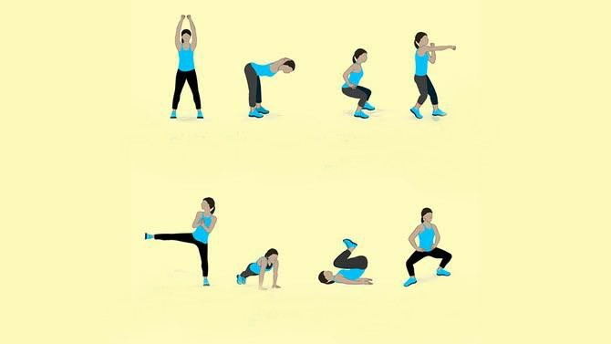

No equipment Exercise?
Exercises that require no equipment
No-equipment exercises are an effective way to build strength and workout whenever (and wherever) you want. To get started with this workout style, you’ll need to know some basic strength moves you can perform that will deliver results and help you to get fitter and stronger.
Squat
A basic squat, or air squat, is a squat in its simplest form. Squats increase strength in your quads and glutes primarily, whilst
also building muscle in your hamstrings. Air squats are simple, but repeating enough repetitions of them still builds strength, just as weighted squats do.
Squats are a functional movement that can increase mobility in your hips and work almost all of the leg muscles at once.
If you’ve tried squats before and they’ve become too easy, you can make them more difficult even without weights by doing jump squats, or adding variation to the movement with a kneel to squat.
Reverse lunge
Bodyweight reverse lunges are a simple to execute lower-body exercise. They are a great movement
to get started with before progressing to more difficult variations of lunges. They primarily build strength
in your quads and glutes, as well as your hamstrings.
Lunges differ from squats in that they train each leg once at a time (compared to both at
the same time), which means they require a little more balance and stabilisation from your core muscles.
You can increase the intensity of reverse lunges by trying variations — such as a reverse lunge and twist (which requires effort from your obliques) or reverse lunge and knee-ups, which require more exertion from your hip flexor muscles.
Plank
Planks are a great full-body exercise to add your no-equipment workout routine. They
primarily target and build strength in the abdominal muscles, while also engaging the shoulders, glutes and quads to keep your body elevated.
Planks are an effective bodyweight exercise for building overall strength, especially core strength. Just like with p
ush-ups, you can start on your knees and progress to your toes as you build strength. Begin by holding the position
for 10 seconds and increase to 30 seconds or a full minute as you get stronger over time.
Inchworms
Inchworms are another full-body movement that activates the core, shoulders, arms, and legs.
You start by bending over, planting your hands and walking them out from your body.
This movement stretches the hamstrings, and is an effective movement to use in a dynamic warmup.
Sprawl
Sprawls are a slightly more challenging movement to master. This is fast-paced, full-body movement works your shoulders, chest, abdominal muscles and legs, while adding some cardio to a no-equipment strength routine. Using strength building moves like this helps to elevate your heart rate, maintaining the intensity of your workout and helping to make the workout more effective.
Negative Push-up
Negative push-ups build strength in your chest, shoulders and core. Compared to a standard push-up where the effort of the movement is focused on pushing your body away from the ground, in a negative push-up the focus should be on slowly lowering your body to the ground, while maintaining a strong core.
Slowing down the movement challenges your upper body, and your neuromuscular connection, by moving your focus from pushing up to slowly lowering down.
In and Out Plank
In and out planks are a dynamic plank variation. Throughout this movement, you’ll be holding your upper body still in the plank position, while stepping your feet out to the left and right, one at a time.
While this sounds simple, when held for long enough this movement should challenge your core and shoulders.
Squat Pulse
The squat pulse is another variation of the squat. This movement is designed to target your glute muscles, making them fatigued.
This variation of the squat has a much smaller range of motion — this keeps more tension in your glute and quad muscles for a longer time, making it effective for building up strength in these areas (even without weights).
Related Post: